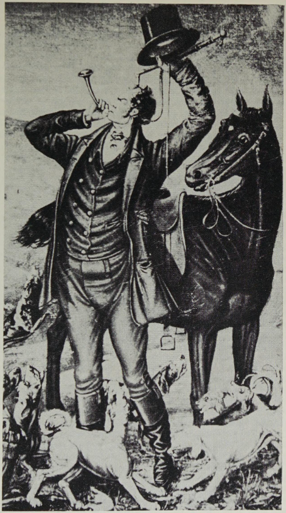
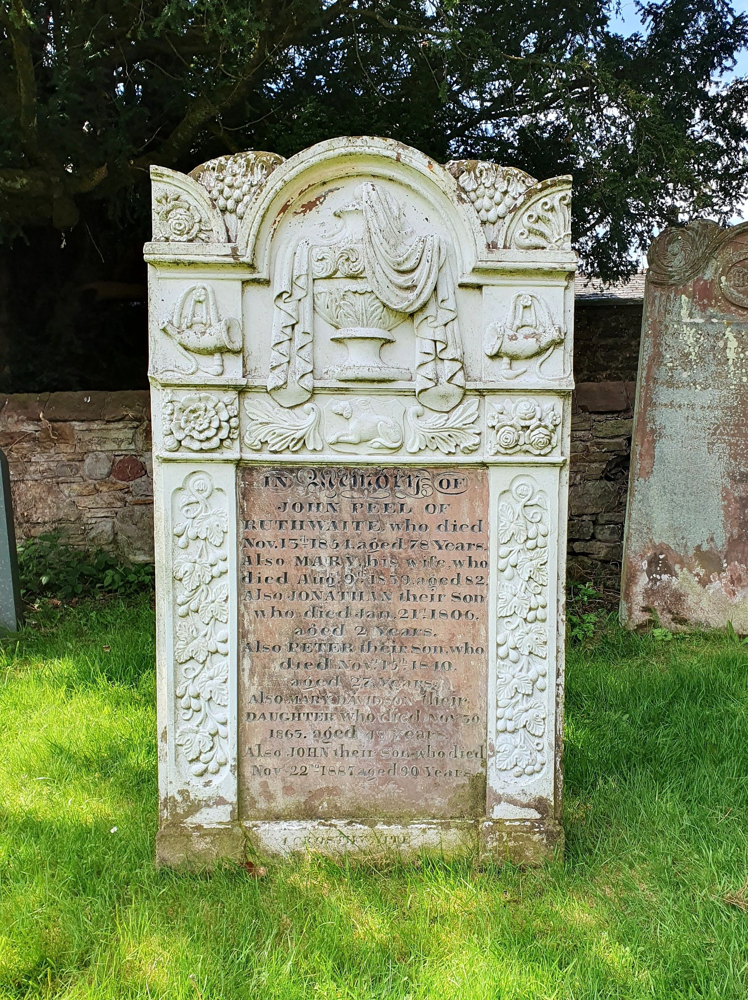

A client asked me to look into her father’s family from Cumbria. One name had followed the family for generations: John Peel, the Cumberland huntsman associated with Caldbeck. They believed there was a family connection, although nobody had been able to show exactly where it came from.
A family story with no documented link
The client already knew several recent generations of her paternal family. Earlier generations had lived in Cumberland before part of the family moved to Australia, and she now lives in Austria. The John Peel story had survived those moves, even though the details of the relationship had disappeared.
I began with the relatives who could be identified from records and worked back from there. The aim at this stage was simply to establish the client’s ancestry as securely as possible and see where it led.

Building John Peel’s family first
I also researched John Peel’s immediate family separately. Biographical sources gave me a useful outline, which I checked against parish and family records before looking for any connection with the client.
Cumbrian Lives identifies John Peel (1776–1854) as the Caldbeck-area huntsman later celebrated in D’ye Ken John Peel?, and gives his parents as William Peel and Lettice Scott. The Historic England listing for John Peel Cottage also records his association with Greenrigg in Caldbeck parish.
His baptism, marriage and children helped establish the immediate Peel family. That work also showed that the client did not descend directly from John Peel. The remembered connection would have to lie elsewhere in his wider family.
Following the client’s family back into Cumberland
The client’s paternal ancestry led back through Cartmell and Jackson generations. Further back, I reached Nancy Scott, who lived in the same part of Cumberland as John Peel’s maternal family.
That made the Scott line worth investigating. I continued tracing the client’s family from the records already established while also working through John Peel’s mother, Lettice Scott, and her relatives.
The documented route
Client’s paternal family
Cartmell and Jackson generations traced backwards from known relatives
direct ancestor in the client’s line
John Peel’s mother
John Peel
Son of the client’s seventh-great-aunt
Nancy Scott and Lettice Scott
The two branches came together with Nancy and Lettice Scott. A surname and a nearby place were enough to make the possibility worth checking, though neither could establish the relationship by itself.
I compared parish baptisms, marriages and burials with probate material and wills, paying particular attention to names, dates, places and relatives mentioned in the records. The evidence identified Nancy Scott and Lettice Scott as sisters. Records for the Peel family then linked Lettice to her son John.
The relationship could now be stated precisely. Nancy Scott was an ancestor of the client, Lettice Scott was Nancy’s sister, and John Peel was Lettice’s son. In the client’s family tree, John Peel was the son of her seventh-great-aunt.
Checking the chain of evidence
Well-known names can spread quickly through public family trees, especially when one tree is copied into another. For that reason, I treated online trees and biographies as sources of possible leads and returned to the underlying records for the family relationships.
Parish and church records supplied baptisms, marriages and burials. Wills and probate material helped identify relatives and separate people with similar names. Later civil, census and family records carried the client’s line through the more recent generations.
What mattered was continuity. Each generation needed evidence connecting it to the next, including the Scott generation where the client’s ancestry joined John Peel’s maternal family.
John Peel’s grave at Caldbeck
John Peel is buried at St Kentigern’s Church in Caldbeck. His memorial records members of his immediate family and is useful for dates and family context. It also gives the story a physical setting: the documentary trail eventually leads back to the same Cumberland landscape in which Peel lived and was buried.
The client’s relationship came from the surviving records for the Scott family, particularly those that established Nancy and Lettice as sisters.

What had survived in the family
The family had remembered the right person, although the exact relationship had been lost. That is hardly surprising over so many generations. A connection described in everyday conversation is much easier to pass on than a relationship such as “the son of a seventh-great-aunt”.
By the time the story reached the present generation, John Peel’s name was still there. The records supplied the missing route back to him.
Where the research could go next
The initial five-hour project answered the question about John Peel and left several other parts of the family open for further research. Other branches have deep roots in Cumberland, where parish records, wills, land and property records, newspapers and local archive collections may add detail about where relatives lived, the work they did and the communities around them.
The Australian branch has its own history to uncover. Passenger lists, state civil registrations, probate records, electoral rolls and newspapers could help establish when individual relatives left Britain, where they settled and what happened after migration. They may also show how much of the family’s Cumberland identity was carried to Australia.
There is plenty still to explore around John Peel himself. A search of the Cumbria Archive Service catalogue brings up material relating to Peel, his image and his later reputation. Among the catalogue entries are British and Australian newspaper articles about John Peel and John Woodcock Graves, the writer associated with D'ye Ken John Peel; typescripts about Peel and Cumbrian fox-hunting; photographs and postcards of his grave, cottage and birthplace; and genealogical papers for other Cumbrian families with a recorded connection to John Peel. The catalogue also contains material on the later history and popularity of the song.
An archive visit could therefore add much more than another generation to a family tree. It might shed light on Peel’s place in his local community, the buildings and places associated with him, and the way his reputation developed after his death. Catalogue descriptions still need checking against the documents themselves, especially with a name such as John Peel, which was used by more than one person.
My guide to Cumbria Archive Centres covers the local repositories and the kinds of records they hold for family historians researching Cumberland and Westmorland.
A family story with an answer
The research began with a name remembered across several generations and continents. Following the client’s paternal family back through Cumberland records eventually reached Nancy Scott. Research into John Peel’s family reached Lettice Scott. The records showed that the two women were sisters.
That gave the family a documented answer to a story they had carried for years: John Peel belonged to their wider family through the Scott line.
Have a family story you would like to investigate?
If a name, place or relationship has been passed down in your family, start with whatever can be documented in the more recent generations. Certificates, photographs, family papers and known relatives can all provide a useful starting point.
I can assess the surviving evidence through lineage verification, parish registers, wills, newspapers, local archives and wider family-network research. You are welcome to send me the story and what you already know, and I can suggest an appropriate scope for the research.